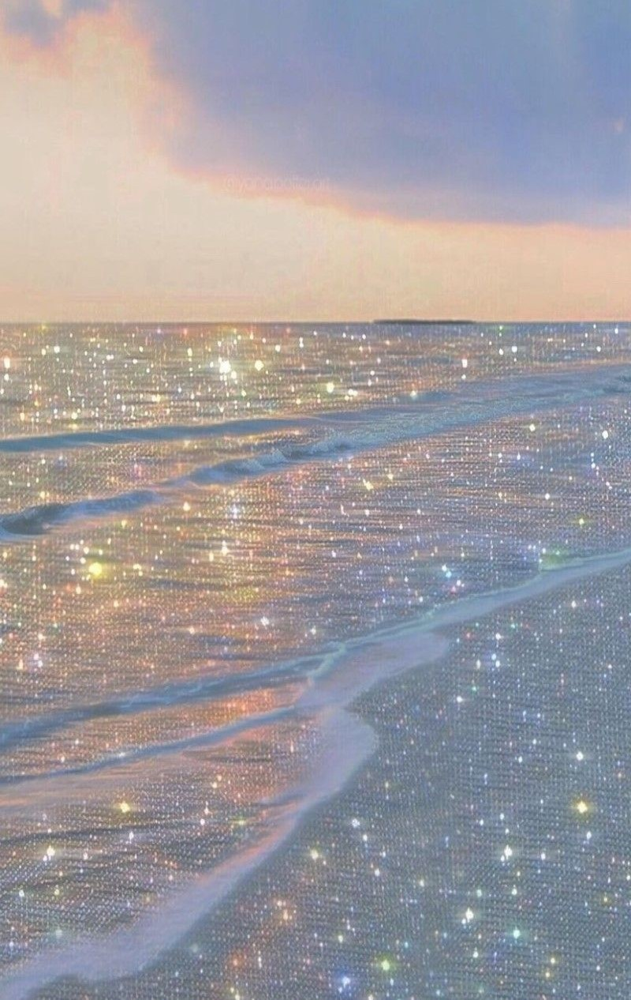

💙 해보고 싶은것 💙
- 매일 다짐만 하는 다이어트 성공
- 하루계획 세운거 그대로 해보기
- 시험계획에 맞춰서 딱딱딱 하기
- 2020년 겨울에 중학교 애들 모아서 중학교 교복입고 롯데월드 가기
- 2020년 여름은 패스하고 2021년에 케리비안베이, 계곡가기
- 2020년 겨울..코로나가..끝난다면...애들이랑 인천, 월미도 가기
- 다같이 모아서 지하철 타고 12사쯤에 인천도착하기
- 옆에 차이나 타운에서 점심먹기
- 차이나타운 구경 조금 하고 주변 동네 구경 하면서 사진찍기
- 해 질때쯤에 월미도로 천천히 이동하기
- 바다앞에서 단체사진
- 해 지면서 놀이공원 들어가서 디팡, 바이킹 타기
- 저녁으로 조개구이 먹기
- 그리고 다시 바이킹 타고 바다 앞에서 사진찍기
- 막차타고 동네로 가서 옥상에서 라면 먹고 집가기
- 공부도 좀 해야되지 않을까 해인아..?
- 당구 연습도 좀 하기 300쳐보는게 꿈입니다
- 2학년 때 3반 되서 신혜정 쌤이랑 같은 반 되기!!
- 3학년 9월쯤에 취업 실습 나가기
- 친구들이랑 심야 영화 보기
- 미림 애들이랑 선배들처럼 일본 여행가기
- 광신중 애들 모아서 가평 가기
- 가평 가고 펜션 잡아서 바베큐 파티 하기
- 잘생긴 운명의 남자와 연애 하기

❤✨༼ つ ◕_◕ ༽つ✨❤